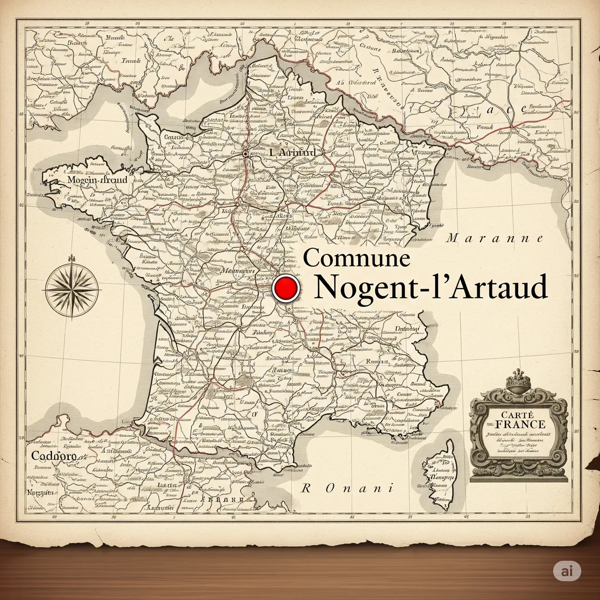
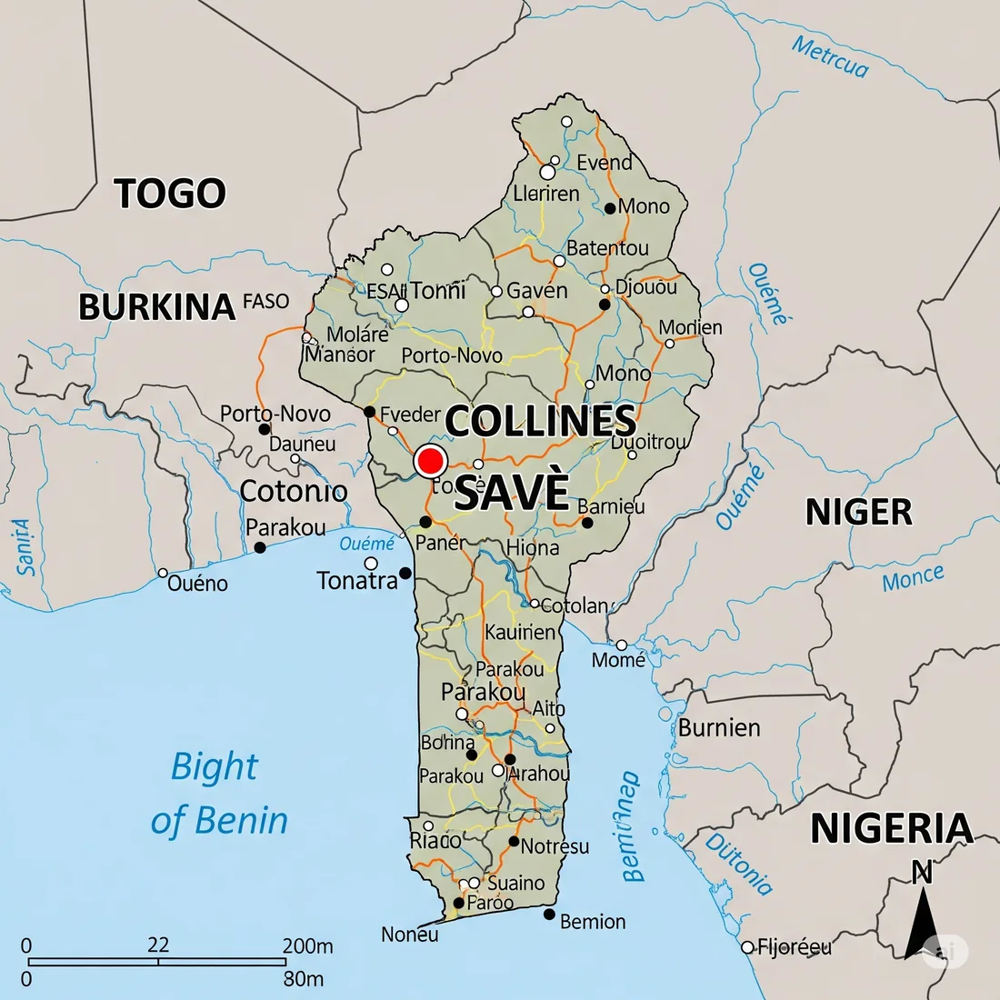

Nos Projets
Découvrez les initiatives et les actions que nous menons pour renforcer les liens culturels et la solidarité.
Échanges Culturels et Voyages Découverte
Organisation de voyages thématiques et d'échanges culturels entre la France (Nogent-l'Artaud), le Bénin (Savè) et les Antilles. Ces projets visent à favoriser la découverte mutuelle des patrimoines, des traditions et des modes de vie.
Nogent-l'Artaud, France

Notre point d'ancrage en France.
Savè, Bénin

Une ville partenaire au cœur de nos actions en Afrique.
Soutien à l'Éducation : Bourse Scolaire
Mise en place d'un programme de bourse scolaire pour aider les jeunes méritants issus de milieux défavorisés à accéder à une éducation de qualité, notamment à Savè au Bénin. Ce projet est essentiel pour l'avenir de ces jeunes et pour le développement de leur communauté.
En savoir plus sur la bourse scolaireActions de Solidarité et Développement Local
Initiation et soutien de projets visant à améliorer les conditions de vie et favoriser le développement économique et social dans nos zones d'intervention. Cela peut inclure des initiatives dans les domaines de la santé, de l'accès à l'eau potable, ou du soutien aux initiatives locales.
Organisation d'Événements Culturels
Création et organisation d'événements culturels divers (festivals, expositions, conférences, ateliers) dans nos différentes localités pour promouvoir les échanges artistiques et culturels et renforcer le tissu social.
Voir notre agenda